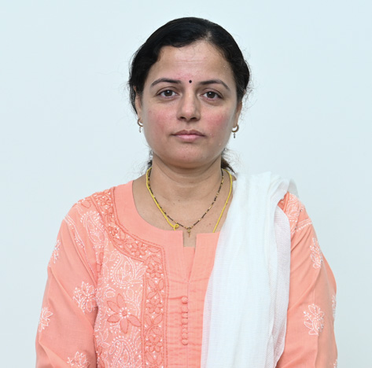

Dr. Anjali Rajesh Askhedkar
Assistant Professor

Assistant Professor
Prof. Anjali Askhedkar is an Assistant Professor in Electronics and Telecommunication Engineering at MIT World Peace University (MITWPU), Pune since 2004. She holds a master's degree in Microwave Engineering from College of Engineering, Pune and is currently pursuing her Ph.D. in Electronics and Communication Engineering from MIT-WPU Research Centre, Pune. She has been actively involved in research projects with organizations like Aashay Measurements Pvt. Ltd. and The Pranic Healing Centre, Pune. She has attended international workshops on LoRa technology and is a member of IETE and ISTE. She has also handled major administrative responsibilities at MITWPU.
Wireless communication, LPWAN, IoT Publication An innovative wireless design for a car infotainment system S Gupte, AR Askhedkar 2018 Second International Conference on Intelligent Computing and Control … Design and Finite Element Analysis of IoT based Smart Helmet NV Joshi, SP Joshi, MS Jojare, NS Joshi, AR Askhedkar 2020 IEEE International IOT, Electronics and Mechatronics Conference … TV white spaces for low-power wide-area networks A Askhedkar, B Chaudhari, M Zennaro, E Pietrosemoli LPWAN Technologies for IoT and M2M Applications, 167-179 Design of a Microstrip Patch Antenna as a Moisture Sensor PP Gundewar, VU Patel, TS Chaware, AR Askhedkar, RS Raje, ... 2019 IEEE Pune Section International Conference (PuneCon), 1-5 IoT based Smart Vest and Helmet for Defence Sector NV Joshi, SP Joshi, MS Jojare, AR Askhedkar 2021 International Conference on Communication information and Computing … LiFi and Voice Based Indoor Navigation System for Visually Impaired People MR Botre, AR Askhedkar 2019 IEEE Pune Section International Conference (PuneCon), 1-4 Hardware and software platforms for low-power wide-area networks A Askhedkar, B Chaudhari, M Zennaro LPWAN Technologies for IoT and M2M Applications, 397-407 Google Scholar Link https://scholar.google.com/citations?user=00-S49wAAAAJ&hl=en Scopus Link https://www.scopus.com/authid/detail.uri?authorId=57217204067 Orcid Link https://orcid.org/0000-0002-6781-4098